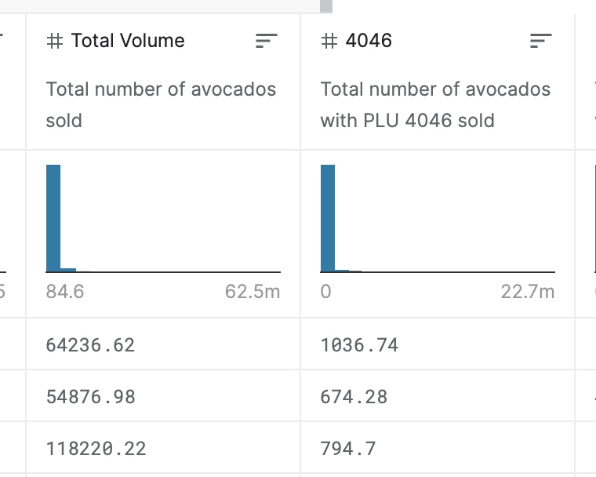
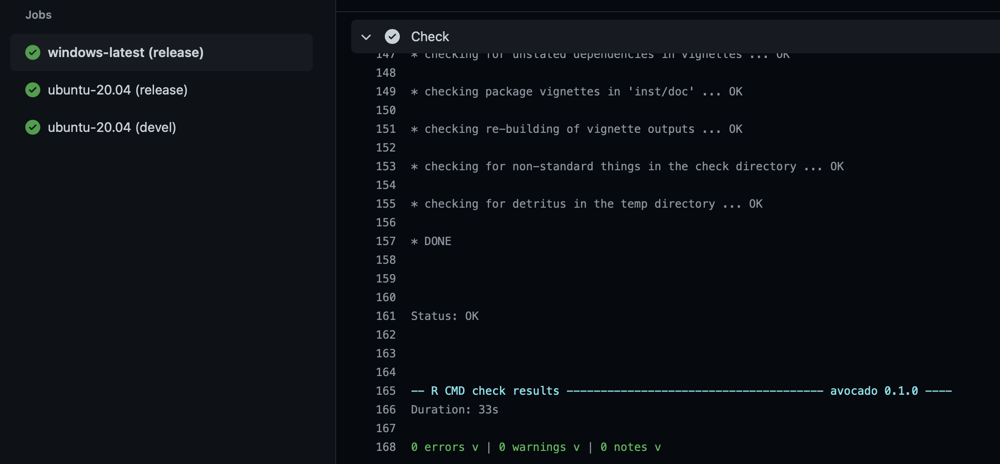

I’m pleased to share that my second package, {avocado} - version 0.1.0 - is now on CRAN. The {avocado} package consists of three different datasets that describe the weekly Hass Avocado sales in the contiguous US.
As you may have guessed, this is a dataset only package. While I do think it’s helpful to build packages that have useful functions, I also think it’s especially important to have packages that consist of interesting datasets that can easily be used for a variety of purposes. Furthermore, if dataset packages continue to be updated, they can provide meaningful value for the long run. In my opinion, however, there’s nothing wrong with having datasets hosted on websites such as Kaggle or UCI Machine Learning Repository. Often, those websites - for example - consist of more real-world like data (e.g., missing values, not ‘tidy’, extremely large datasets, etc.). Dataset packages in R are usually smaller (they have to be less than 5 MB total) and already ‘tidied’ for easier/faster usage.
With that said, I had two motivations while constructing this package:
The avocado data that I’m using is commonly found and used on Kaggle. What I found lacking was the context around the different variables found within the dataset. For instance, the Hass Avocado Board (HAB) measures avocado sales in terms of weight - not units. While some users mention it, many don’t. I think having this context is important. I wanted to learn more about where the data came from and its context.
In the book, R Packages by Hadley Wickham & Jenny Bryan, there is a chapter about Automated Checking using the Travis CI service. I have seen many developers use a CI (continuous integration) service and Travis CI seems to be quite popular. So I wanted to learn more about continuous integration and how I can use it for package development.
I first became familiar with the avocado dataset on Kaggle a couple years ago. If you click on that link, you’ll see a pretty decent explanation of the dataset. At first glance, you’ll think that the sales data represents units sold. However, when you look at the preview of the data, you’ll see how there are decimal values for variables such as Total Volume or 4046(see image below). How can you sell a fractional unit of an avocado at retail?

For a while, I had accepted it, but it always bothered me. And for that time, I was lazy and busy with other things to really worry about it. After I published my first R package on CRAN, I thought about revisiting the avocado data and first see if anyone had created something similar on CRAN. In my quick search, I couldn’t find anything - other than a variety of folks using the Kaggle avocado dataset. So I set about digging into the origins of the dataset and try to determine the context.
First, I had to register with the Hass Avocado Board - which was free, thankfully. Surprisingly, their website is very informative and they have LOTS of data on avocados. If anyone is interested in growing or marketing avocados, this organization has done an exemplary job of avocado research and all the information is free after registering.
Here’s where I learned some nuances of the data they have. The HAB has CSV data that anyone can download. However, within that dataset, there are weekly sales totals for the contiguous US, totals for specific regions within the contiguous US, and totals for specific cities/sub-regions within regions. Furthermore, the ‘volume’ or ‘units’ used in the dataset are in US pounds - aka weight. Why? This isn’t explained very well, but from my own experience in crop production, weight is a very simple way to describe how much crop is available rather than units. While retailers may purchase and sell by the unit or piece, describing how much has been sold by weight is a ‘simpler’ approach that preserves any competitive or proprietary information that grower may want to retain.
While I was studying this dataset and its nuances, I came to the conclusion that there are actually three datasets within the original data provided by the Hass Avocado Board. I don’t think the original author on Kaggle mentioned this, but I thought it would be useful to have it documented and presented in a way that preserves most of what the HAB provides.
I did make some changes to the data in terms of excluding variables that described totals. I felt that these could be recreated by users as part of their feature engineering exercise - should they choose.
In the end, I feel pretty good about documenting the dataset and providing the context needed for further analysis.
Perhaps the biggest benefit of CI platforms is the ability to have code tests run ‘in the background’ - especially when pull requests are made. The goal here is to ensure that potential bugs are found - enabling developer(s) to fix the issue prior to merging the code into production. While Hadley & Jenny’s book talks about Travis CI, there are alternatives - such as GitHub Actions. All this was new to me (and still is) and I wanted to learn more about it. So I chose to go with GitHub Actions and proceeded to find out how I can leverage it with R.
I chose not to go forward with Travis CI due to a MAJOR change in their pricing policy. Effectively, they will only give free accounts up to 10,000 credits - which expire after one year. Once all the credits are used up (or expired), the user has to sign up for a paid account1. As a hobbyist, I don’t want to spend more money than I have to. I was pleasantly surprised to see that GitHub offers 2,000 minutes of GitHub Actions free for private repositories and unlimited minutes for public repositories.
Definitely a no brainer and time to move forward with GitHub Actions. And GitHub Actions works with R!
The highly versatile {usethis} package has a great function, use_github_action_check_standard() that quickly & easily implements the necessary files to initiate & use GitHub Actions.
What this does, in terms of R package development, is enables GitHub to fire up some virtual machines in the cloud, run R-CMD-CHECK on your package, and provide a ‘summary’ of the results. This is a great way to check if your package will work on platforms other than the one you are developing on. In my case, I develop R packages on a Mac - so if it works on my Mac, I can safely assume it’ll work on other similar Mac’s. However, I don’t have access to a Windows or a Linux machine to test my package - and that’s where GitHub Actions steps in.
I’ve ran (at the time of this writing) 17 GitHub Actions instances. You can click on that link and then click on any of the links to see the reports. You’ll also notice that I used GitHub Actions for my {pkgdown} site for the package.
Here’s a quick peek at the results from the Windows release:

Note how the last line in the output basically shows no errors, warnings, or notes. Checking all three (Windows & both Ubuntus) is how I confirmed if my package would work on those platforms. I definitely could have instructed GitHub Actions to test on a Mac platform, but I felt that was redundant and not necessary.
I know I’ve just unlocked the tip of the iceberg here. As I develop packages for my own job, I can easily see myself using GitHub Actions as a way to ensure minimal bugs in addition to using {testthat}.
To recap:
I wanted to provide context on the avocado dataset used widely on Kaggle and I did that by documenting what I found and creating an R package
I used GitHub Actions to do CI as a way to learn more about it and practice
If you do use this package and find any bugs, or have any comments/questions, please feel free to open an issue! Thanks!
While I understand why they’re making the change, I also feel that their change is not very accommodating to hobbyists. Alas, this is a much larger discussion and I, for one, am not qualified or well-versed in discussing it.↩︎